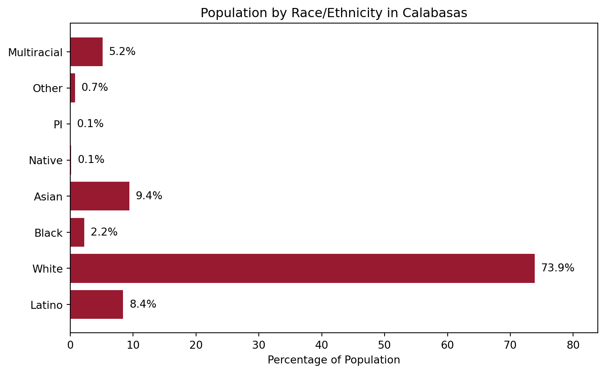

City: Calabasas
County: Los Angeles
Total Population: 23,241
Median Household Income: $136,138
City Dashboard: Calabasas

Overview
Demographics

Economic Snapshot
Housing & Education
| Metric | Value |
|---|---|
| Median Home Price | $1,285,000 |
| % Owner-Occupied Housing | 78% |
| % with Bachelor’s Degree | 65% |
| School District Rating | ★★★★☆ |
Interactive Map
Make this Notebook Trusted to load map: File -> Trust Notebook